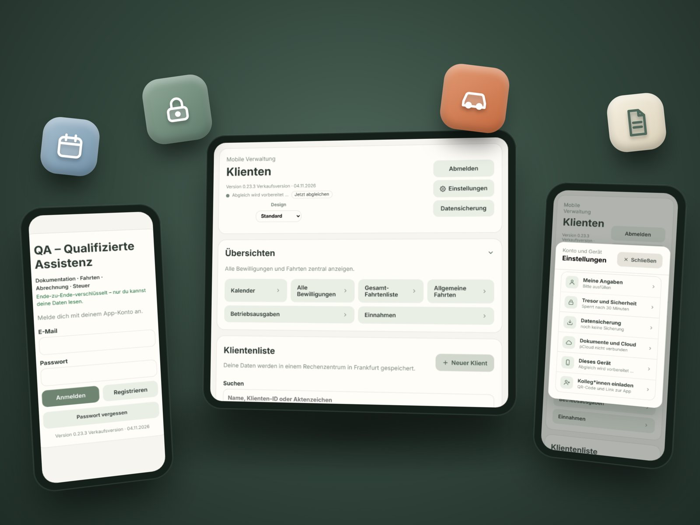
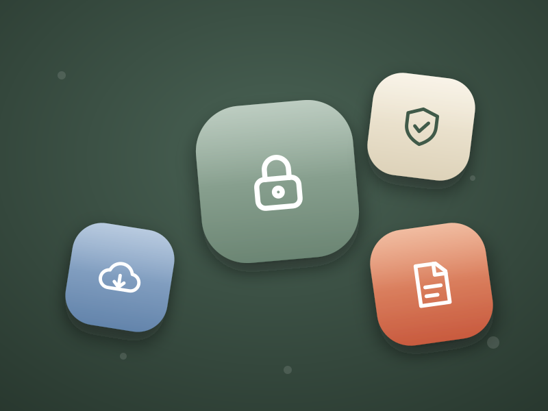

Tägliche Dokumentation
Termine schnell festhalten – mit Textbausteinen, die sich zu ganzen Sätzen zusammensetzen. Namen werden automatisch eingesetzt.
Die App für Qualifizierte Assistenz
Die QA-App bündelt Dokumentation, Leistungsnachweis, Fahrtenbuch und Betriebsausgaben an einem Ort – entwickelt von einer Qualifizierten Assistenz, die den Monatsabschluss selbst leid war.
Läuft auf iPhone, iPad, Mac, Android und Windows – ohne Download aus einem App-Store.

Die Idee
Du dokumentierst deinen Einsatz direkt nach dem Termin. Daraus entstehen Leistungsnachweis, Fahrtenbuch-Einträge und die Unterlagen für die Steuer – ohne dieselben Angaben mehrfach abzutippen.
Funktionen
Termine schnell festhalten – mit Textbausteinen, die sich zu ganzen Sätzen zusammensetzen. Namen werden automatisch eingesetzt.
Der Monatsnachweis entsteht aus deinen Einträgen – als PDF und als Excel-Datei auf Basis der SuPA-Vorlage.
Kilometer werden aus den Adressen berechnet. Auf Wunsch zusätzlich mit Tachoständen; Lücken zwischen Fahrten erkennt die App als Privatfahrten.
Ausgaben mit fortlaufender Belegnummer, Beleg-Foto und Jahresübersicht nach Kategorien – fertig für deine Steuererklärung.
Du siehst, wie viele Stunden bewilligt und schon verbraucht sind, wann der Gesamtplan fortgeschrieben wird und wann Berichte fällig sind.
Termine planen, auch wöchentlich wiederkehrend. Ein Tipp macht aus dem Termin später die Dokumentation.
Stammdaten, Kontaktpersonen und Dokumente je Klient*in an einer Stelle – als Bogen ausdruckbar.
Verschlüsselte Sicherungen laufen automatisch in deine eigene Cloud. Du kannst jederzeit eine Sicherung zurückspielen.
So läuft ein Monat
Nach dem Termin Dokumentation, Fahrt und Beleg erfassen – am Handy, am Tablet oder am Rechner.
Die Monatsprüfung meldet fehlende Belege oder Kennziffern, bevor etwas falsch beim Kostenträger ankommt.
Leistungsnachweis als PDF oder Excel erzeugen, Unterlagen für die Steuer ausdrucken oder weitergeben.
Datenschutz
In der Assistenz arbeitest du mit Sozial- und Gesundheitsdaten. Deshalb ist die QA-App von Anfang an so gebaut, dass niemand außer dir die Inhalte lesen kann.

Auf allen Geräten
Die QA-App ist eine sogenannte Web-App: Du öffnest sie im Browser und legst sie mit einem Fingertipp auf deinen Startbildschirm – wie eine normale App, aber ohne App-Store.
Ausprobieren
Am schönsten auf dem Tablet oder Handy. Beides ist kostenlos und unverbindlich.
Sofort loslegen, ohne Anmeldung und ohne Einrichtung. Drei erfundene Klient*innen mit Terminen, Dokumentationen, Fahrten und Belegen – alles zum Anklicken. Es wird nichts gespeichert.
Mit E-Mail-Adresse registrieren und die App mit eigenem, verschlüsseltem Tresor testen. Nach 7 Tagen endet der Test automatisch; bei einem Vertrag bleibt alles erhalten.
Häufige Fragen
Die Preise stehen noch nicht fest. Die App soll als monatliches Abo angeboten werden. Wenn du dich meldest, informiere ich dich, sobald es so weit ist.
Für Qualifizierte Assistenzen, die im Raum Hannover für SuPA arbeiten. Adresse, Leistungsort „SuPA Büro“, Excel-Vorlage und Leistungsträger (Landeshauptstadt und Region Hannover) sind darauf ausgerichtet. Weitere Regionen und Träger sind möglich, aber noch nicht geplant.
Nein. Die QA-App ist ein unabhängiges Angebot und wird nicht von der SuPA GmbH herausgegeben oder betrieben. Die App nutzt lediglich deren Vorlage für den Leistungsnachweis.
Weil die Daten wirklich nur für dich lesbar sind, kann auch ich sie nicht entschlüsseln. Für den Notfall erstellt die App beim Einrichten einen Wiederherstellungsschlüssel mit druckbarem Notfallblatt. Bewahre ihn sicher auf.
In deiner eigenen Cloud, nicht auf meinen Servern. Derzeit ist pCloud angebunden; weitere Anbieter sind geplant. Für berufliche Daten empfiehlt sich ein Geschäftskonto mit Auftragsverarbeitungsvertrag.
Nein. Die QA-App unterstützt dich beim sauberen Dokumentieren und Rechnen. Verantwortlich für die Richtigkeit der Angaben bleibst du; die App ersetzt keine Steuer- oder Rechtsberatung.
Kontakt
Schreib mir oder ruf an. Ich richte dir einen Testzugang ein und beantworte deine Fragen.